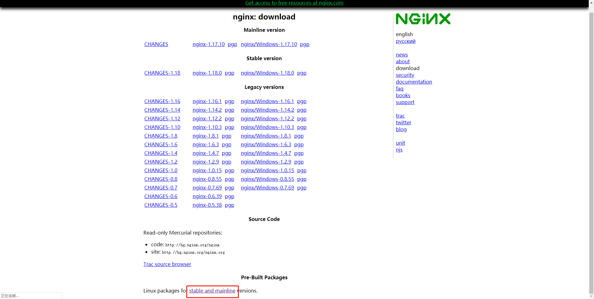
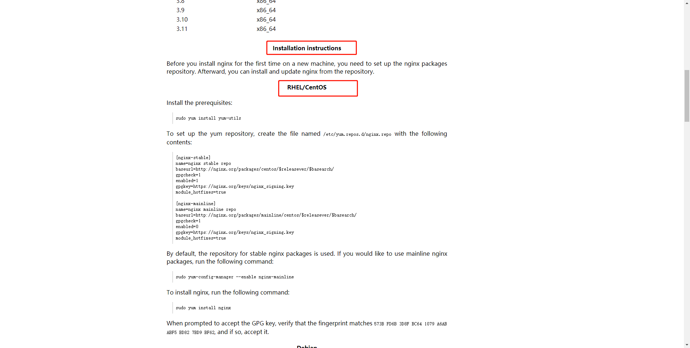
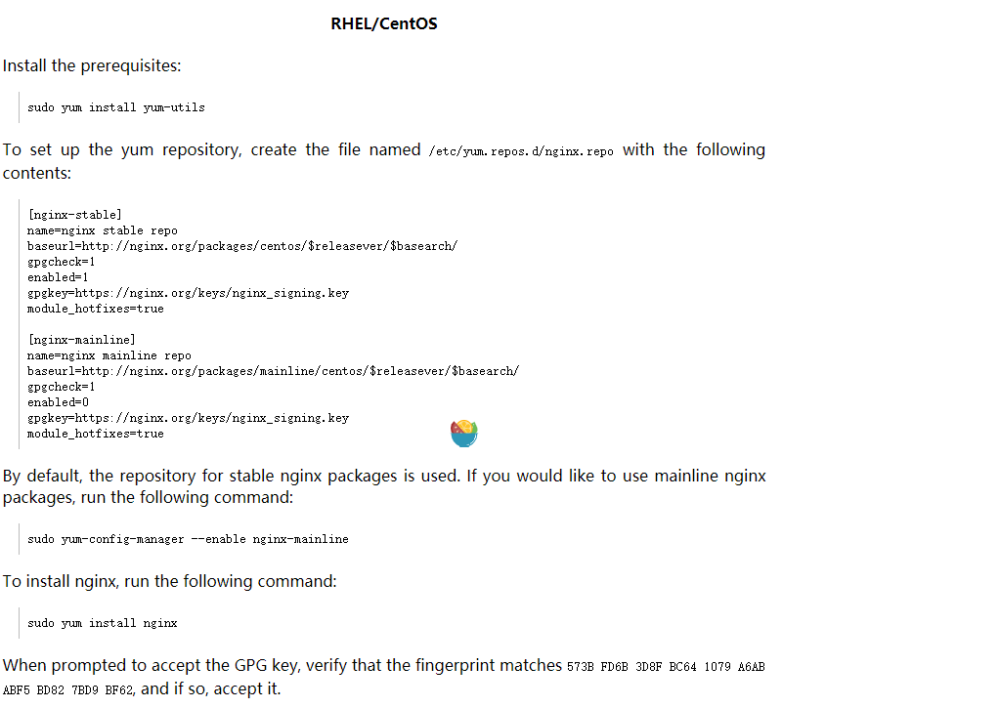
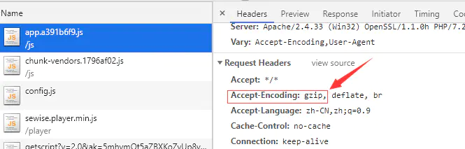
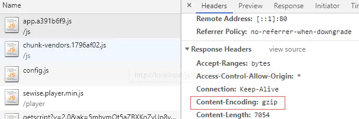
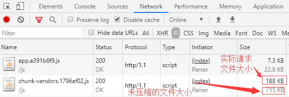
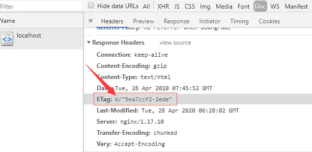
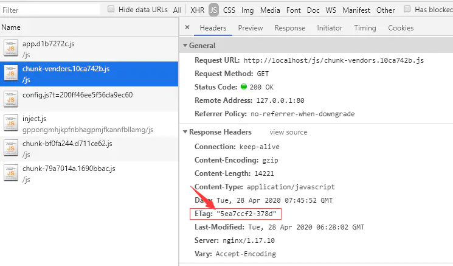
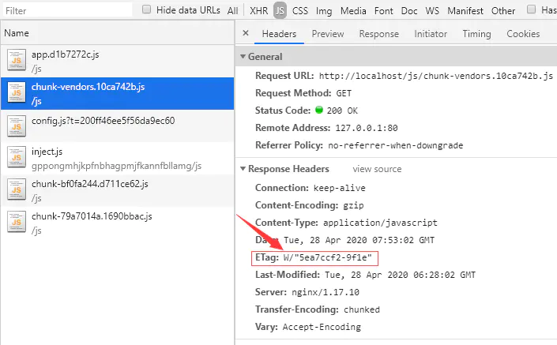

nginx简介
下载：http://nginx.org/en/download.html
nginx安装
第一步：进入下载页面

第二步：选择系统（centos，Ubuntu）

第三步：根据提示，进行install

nginx使用
Vue配置history
一级域名
1 | location / { |
子域名
1 | location /ticket { |
gzip配置
1.服务器配置gzip压缩
Nginx是前端文件常用的服务器，Nginx服务器的配置文件nginx.conf的http模块：
1 | server { |
2.检查gzip是否生效
浏览器文件请求的请求头包含字段Accept-Encoding: gzip代表浏览器支持gzip压缩文件

文件响应头包含字段Content-Encoding: gzip代表返回的是压缩文件

同时NetWork一栏还可以查看到文件的实际大小和实际的请求（gzip）文件大小

3.检查Nginx是否使用了我们提供的gz文件
Nginx自带gzip压缩功能，如果我们没提供，它会实时压缩（例如index.html文件），这就很浪费服务器资源了。现在我们已经提供js和css的gz文件，如何判断Nginx是使用了我们提供的gz文件，而不是自己压缩的呢？
上面有一个配置项：gzip_static on;，开启之后Nginx会优先使用我们的gz文件，但是还是不能确定，Nginx有没有使用gz文件。
查看network请求发现，每一个文件都有etag响应头，如果Nginx使用了已有的gz文件，那么这个请求的etag值不带有W/，反之，如果是文件是Nginx压缩的，etag值则会带有W/。
例如index.html:

拿chunk-vendors.js做一个实验，这个文件本身是带有gz文件的，请求的etag如下（不带有W/）：

这时候我们删掉服务器上chunk-vendors.js对应的gz文件，刷新页面，请求如下：

综上，我们就可以验证，只要我们配置了gzip_static on;，Nginx就会优先使用了我们提供的gz文件。